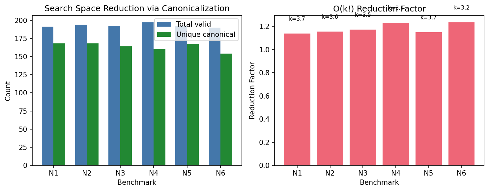

Results
Experimental methodology for validating the O(k!) search space reduction and its impact on existing symbolic regression methods.
Evaluation Methodology
Search Space Reduction
The central claim of IsalSR is that for an expression DAG with k internal nodes, there exist Θ(k!) structurally equivalent but differently-labeled variants occupying separate points in the search space. IsalSR collapses these redundancies into a single canonical string, reducing the effective search space by a factor of k!.
The theoretical reduction factor is defined as:

Three-Axis Evaluation
IsalSR is evaluated along three orthogonal axes using a paired comparison design (baseline vs. IsalSR variant, 30 seeds per configuration):
Axis 1: Search Space
Reduction factor ρ, redundancy rate, unique canonical strings vs. total DAGs explored.
Axis 2: Regression Quality
R², NRMSE, solution recovery rate. IsalSR should match or improve baseline quality.
Axis 3: Overhead
Canonicalization cost per DAG, overhead percentage relative to fitness evaluation.
Plug-and-Play Integration
IsalSR is not a new symbolic regression method. It is a representation layer that can be integrated into any existing SR algorithm with a single canonicalization step before fitness evaluation. We validate this claim by integrating IsalSR into two fundamentally different SR methods:
Bingo (NASA)
Stochastic evolutionary approach using Pareto optimization (age-fitness). Mutation and crossover frequently rediscover equivalent expression structures. IsalSR can deduplicate the population by canonicalizing each individual before evaluation.
UDFS (IJCAI 2024)
Deterministic depth-first enumeration of DAG skeletons. Systematic enumeration naturally produces all k! permutations of each structure. IsalSR can eliminate redundant evaluations by mapping each skeleton to its canonical form.
Benchmark Suites
Nguyen Benchmarks (12 problems)
| Problem | Variables | Expression |
|---|---|---|
| Nguyen-1 | 1 | x³ + x² + x |
| Nguyen-2 | 1 | x⁴ + x³ + x² + x |
| Nguyen-3 | 1 | x⁵ + x⁴ + x³ + x² + x |
| Nguyen-4 | 1 | x⁶ + x⁵ + x⁴ + x³ + x² + x |
| Nguyen-5 | 1 | sin(x²) · cos(x) − 1 |
| Nguyen-6 | 1 | sin(x) + sin(x + x²) |
| Nguyen-7 | 1 | ln(x + 1) + ln(x² + 1) |
| Nguyen-8 | 1 | √x |
| Nguyen-9 | 2 | sin(x) + sin(y²) |
| Nguyen-10 | 2 | 2 sin(x) cos(y) |
| Nguyen-11 | 2 | xy |
| Nguyen-12 | 2 | x⁴ − x³ + y²/2 − y |
AI Feynman Benchmarks (10 physics equations)
Selected from the Feynman Symbolic Regression Database. 1–3 input variables, encompassing polynomial, rational, and transcendental forms from the Feynman Lectures on Physics. Training: 1,000 points; Testing: 250 points.
Statistical Protocol
For each (method, problem, seed) triple, both the baseline and IsalSR variants are run with identical computational budgets (same wall-clock timeout). Results are aggregated over 30 random seeds and compared using:
- Paired t-test and Wilcoxon signed-rank test (per-problem significance)
- Holm-Bonferroni correction (family-wise error control)
- Friedman test with Nemenyi post-hoc (cross-problem ranking)
- Cohen’s d with bootstrap confidence intervals (effect sizes)